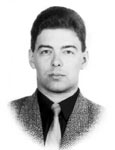

Lyndon B. Johnson Space Center
Houston, Texas 77058
|
National Aeronautics and Space Administration Lyndon B. Johnson Space Center Houston, Texas 77058 |
 |
Biographical Data |
||
KONSTANTIN ANATOLIYEVITCH VALKOV
(COLONEL OF THE RUSSIAN AIR FORCE)
TEST COSMONAUT, GAGARIN COSMONAUT TRAINING CENTER, RUSSIA
PERSONAL DATA: Born November 11, 1971, in Kamensk-Uralski, Sverdlovsk Region. Married to Valkova (Pikalova) Zlata Borisovna. They have two daughters. His mother, Valkova Lyudmila Victorovna, resides in Kamensk-Uralski. His hobbies include books, computers, target shooting, model airplanes, active games, parachute jumps.
EDUCATION: Valkov completed Yak-52 flight training at the Sverdlovsk aviation club in 1989. He entered the Kharkov Air Force Pilot School in 1989. Valkov graduated from the Barnaul Air Force Pilot School in 1994 as pilot-engineer.
EXPERIENCE: After graduation from the pilot school he served as a senior pilot in the Air Force. He flew Yak-52, L-39, Su-24 and Su-24M aircraft. He is a Class 3 Air Force pilot.
He was selected as a test-cosmonaut candidate of the Gagarin Cosmonaut Training Center Cosmonaut Office in December of 1997. From January 1998 to November 1999 Valkov completed basic space training and received qualification of test-cosmonaut in November, 1999.
In 2001 and in 2004-2005 he served as the Director of Operations, Johnson Space Center, Houston, Texas. From January 2000 to April 2010 he was in advanced spaceflight training.
From April 2010 Valkov has been training as an ISS-29/30 back-up crewmember.
SEPTEMBER 2010